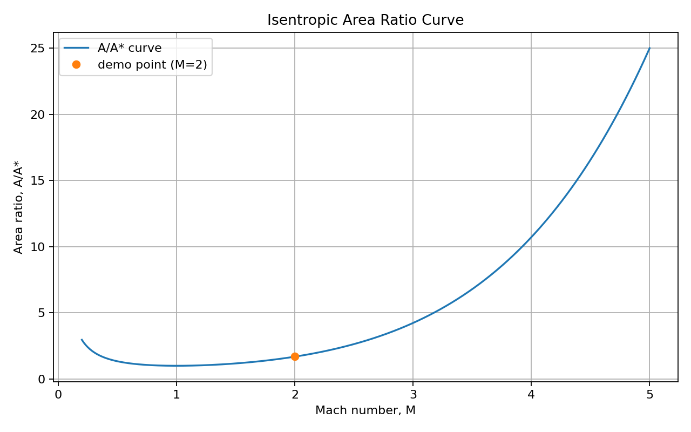

Project Summary
bad_cases.csvresults.csvThis report documents the current run of Compressible Flow Studio.
| case_id | model | gamma | M | M1 | theta_deg | branch |
|---|---|---|---|---|---|---|
| good_iso | isentropic | 1.4 | 2.0 | |||
| bad_ns | normal_shock | 1.4 | 0.8 | |||
| bad_os | oblique_shock | 1.4 | 2.0 | 40 | weak | |
| bad_model | banana | 1.4 | 2.0 | |||
| missing_m1 | normal_shock | 1.4 |
| case_id | model | status | note | branch | T_T0 | P_P0 | rho_rho0 | A_Astar | M2 | p2_p1 | rho2_rho1 | T2_T1 | p02_p01 | beta_deg | Mn1 | Mn2 |
|---|---|---|---|---|---|---|---|---|---|---|---|---|---|---|---|---|
| good_iso | isentropic | OK | Real isentropic calculation | 0.555555555556 | 0.127804525463 | 0.230048145833 | 1.687500000000 | |||||||||
| bad_ns | normal_shock | ERROR | Invalid numeric input: Normal shock requires upstream Mach number M1 > 1. | |||||||||||||
| bad_os | oblique_shock | ERROR | Invalid numeric input: No attached oblique shock solution: theta exceeds theta_max (22.973528 deg). | weak | ||||||||||||
| bad_model | banana | ERROR | Unknown model: banana | |||||||||||||
| missing_m1 | normal_shock | ERROR | Invalid numeric input: could not convert string to float: '' |
The curve shows A/A* as a function of Mach number for gamma = 1.4. The demo point marks the isentropic sample case at M = 2.

The following cases failed validation or computation:
bad_ns (normal_shock):
Invalid numeric input: Normal shock requires upstream Mach number M1 > 1.
bad_os (oblique_shock):
Invalid numeric input: No attached oblique shock solution: theta exceeds theta_max (22.973528 deg).
bad_model (banana):
Unknown model: banana
missing_m1 (normal_shock):
Invalid numeric input: could not convert string to float: ''